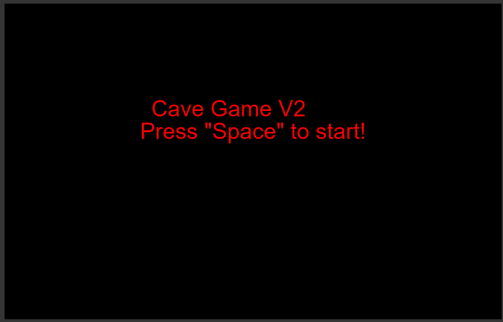
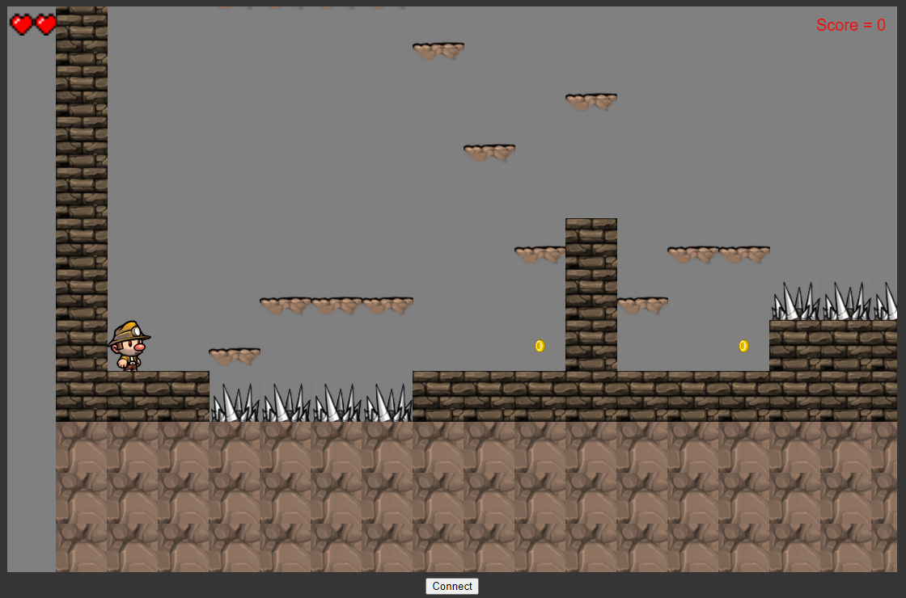

Description
Cave Game V2 is a simple platformer. Your main goal is to collect a varying amount of coins while avoiding spikes. You have a total of 3 lives and an unlimited amount of time per stage to collect all of the coins.
Outline
Controls
Using a simple joystick, you can move left and right.
Pressing down on the joystick allows you to jump.
Scoring
Collecting all the coins per level raises your score. Your total score at the end is the amount of coins collected.
Graphics And Sound
This game was made using the character sprite animations from the game
Spelunky as well as the tilesets provided. It was able to be stitched together
to form an easily editable map.
The sound was made using ToneJS and simple audio samples.
Requirements
In order to play this game to its most effective, you should have an Ardunio.
Connect a joystick to it, as well as setup 2 simple LED's wired to pins 3 and 4.
The joystick should be wired to pins 2, A0, and A1.
Images
An image showing the start screen where the player is prompted to press "Space" to start the game.

An image showing the gameplay screen where the player is either able to play the game freely
or connect at the bottom, allowing them to connect their Arduino device of choice.
Video Example
I was going to embed a video here, but since I am opting to keep
the video unlisted, a YouTube link will have to do.
https://youtu.be/DyHi3F3NffY
Future Development
If I continued to work on this game, there are a few things I would add. The first of these would be an end state for a level that allowed you to transition to a new level even if you don't collect all of the coins. Aother thing I would add is additional levels and powerups. These would be rather easy to implement, as you could either make a new tilemap and have it transition, or just make it on the same map but have it not be visible and teleport the player there.